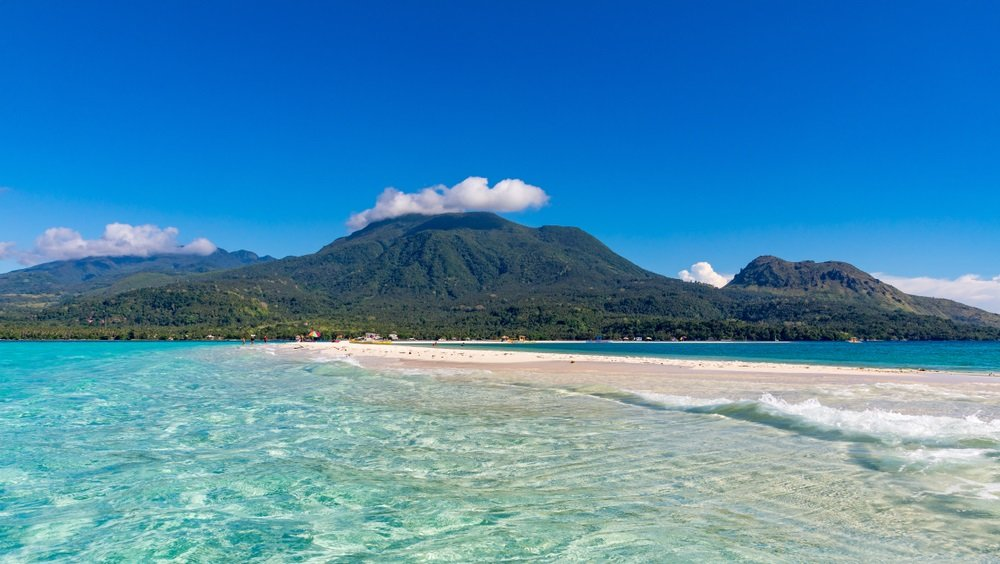

cebu
If you are an underwater enthusiast, Cebu is one of your best options for excursions that get you up-close to whale sharks, coral reefs, and sea turtles.

loboc-floating-restaurant
One of the most popular and exciting destinations in Bohol where one can get on board a floating restaurant and enjoy the food.
TubbatahaReef
Is often considered to be the best dive spot in the Philippines.

baguio
The Summer Capital of the Philippines, with its cool climate making this spot to escape the chaotic scenes in Manila.

Amanpulo-Palawan
Is a private Island retreat in Palawan.

camiguin-island
Is a small and peaceful island province in the Philippines located in the Bohol Sea off the northern coast of Mindanao.